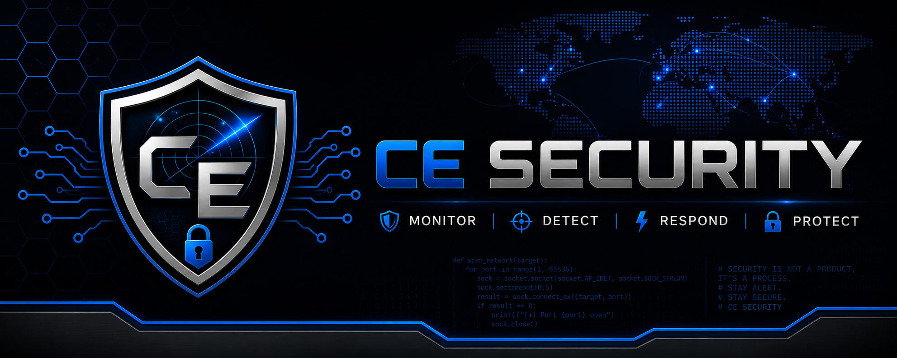

IR-2026-001
Medium
Linux Privilege Escalation
Investigated suspicious account changes, privilege elevation, and Linux authentication activity detected by Wazuh in a monitored lab environment.
View Investigation →CE Security Monitoring
Security Monitoring • Threat Detection • Incident Response
Hands-on cybersecurity portfolio focused on SIEM investigations, home lab security monitoring, Linux and Windows analysis, and professional incident response documentation.
SOC Dashboard
Incident Reports
Home Lab Projects
MITRE Techniques
Primary SIEM
Case Files
Investigated suspicious account changes, privilege elevation, and Linux authentication activity detected by Wazuh in a monitored lab environment.
View Investigation →Investigated repeated failed SSH authentication attempts from a Kali Linux attacker against an Ubuntu Server monitored through Wazuh SIEM.
About the Analyst
Nearly 20 years of hands-on technical work taught me how to troubleshoot complex systems, document findings, and work through problems under pressure.
My current focus is SOC analysis, security monitoring, incident response, Linux and Windows log analysis, and practical threat detection workflows.
I use a self-built cybersecurity lab to generate realistic events, analyze alerts, map activity to MITRE ATT&CK, and create professional case reports.
Home Lab
My lab includes Wazuh SIEM, Linux endpoints, Kali Linux attacker systems, VirtualBox networking, and documented investigations based on real alert data.
Explore Lab Architecture
Skills
Contact
I am actively building hands-on cybersecurity experience and seeking an entry-level SOC Analyst opportunity.